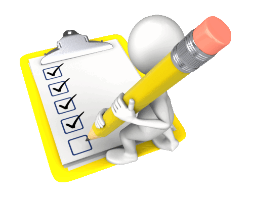

OBJETIVO DE LA ASIGNATURA
|
OBJETIVO DE LA ASIGNATURA |
El estudiante deberá tomar un rol activo en cada tema de aprendizaje que le permitan desarrollar capacidades tanto específicas como genéricas a través de actividades de investigación principalmente documental y donde sea posible de campo, que lo conduzcan a un análisis, argumentación, evaluación, valoración, integración e interpretación de información que lo lleven a comprender la importancia de gestionar y alinear estratégicamente los servicios de TI que generen valor agregado a los procesos, productos y servicios de una organización.
